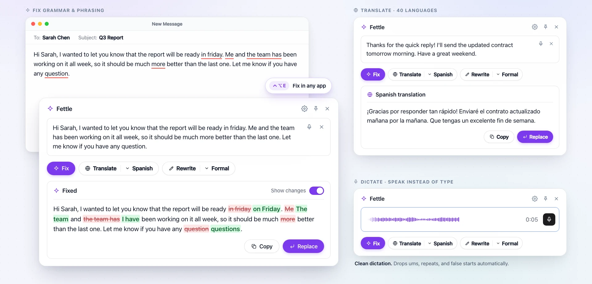

Fix, rewrite, and translate
in any Mac app.
Select text and press ⌃⌥E, or let Fettle underline mistakes as you type. It's free, open source, and can run entirely on your Mac.
Download for MacmacOS 13+ on Apple silicon · All downloads

Underlines as you type
Fettle marks mistakes when you pause typing in Mail, Slack, Notes, Chrome, and most Mac apps. Click one to fix it.
Fix that keeps your voice
Catches grammar, spelling, and phrasing that sounds translated. Your meaning, tone, and links stay as they are.
Rewrite in one click
Make a reply formal, friendlier, shorter, or clearer without starting over.
Translate into 40 languages
Translations that sound like a person wrote them, right where you're writing.
Talk instead of type
Click the mic and speak. Fettle drops the ums and false starts and adds punctuation.
Small and private
A 10 MB native app with no account, no tracking, and no server of its own. MIT licensed.
How it works
- Open Fettle, pick an AI model, and allow Accessibility when asked.
- Select text in any app and press ⌃⌥E. Or turn on Underline mistakes in Settings.
- Check the changes, click any you want to undo, and press ⌘↩ to put the text back.
Questions
Which AI does it use?
You pick one when you first open Fettle:
- On this Mac: Apple's on-device model on macOS 26 with Apple Intelligence. It's free, and your text never leaves your Mac. It's smaller, so it handles shorter texts and fewer languages.
- ChatGPT plan: sign in with the ChatGPT subscription you already have.
- API: OpenAI, OpenRouter, Ollama, LM Studio, or any OpenAI-compatible API.
Is my text private?
Fettle has no account, no analytics, and no server of its own. With the on-device model, nothing leaves your Mac. With other models, your text goes only to the provider you picked. Your sign-in and API keys stay in the macOS Keychain.
Why do I see a warning when I open the app?
Fettle isn't notarized by Apple yet. Open the app once and click Done. Then go to System Settings → Privacy & Security and click Open Anyway.
Or install from Terminal, which skips the warning:
curl -fsSL https://raw.githubusercontent.com/iyazerski/fettle/main/install.sh | sh
Fettle is on Homebrew too:
brew install --cask iyazerski/tap/fettle
Does it cost anything?
Fettle and the on-device model are free. A ChatGPT plan or API is billed by its provider.
Which apps and languages does it work with?
Any app where you can select and copy text. Fix and Rewrite work in any language your model knows, and Translate covers 40. Underlines work in most native Mac apps and Chrome, but not in Telegram or WhatsApp.
Why does it need Accessibility?
To copy and paste for you when you press the shortcut, and to read the text box you're typing in if Underline mistakes is on. Fettle puts your clipboard back afterward, and the code is open, so you can check.
Does it work on Intel Macs, Windows, or Linux?
Not yet. Fettle runs on macOS 13+ on Apple silicon.
More answers in the README.